Productos de
panaderia artesanal
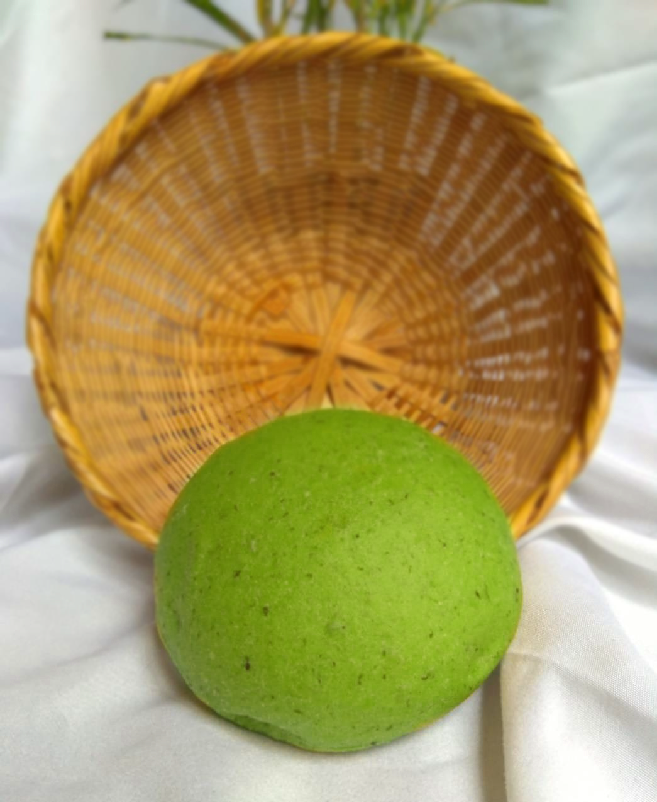
Pan preparado con extracto de espinaca natural, llamativo en color y sabor.
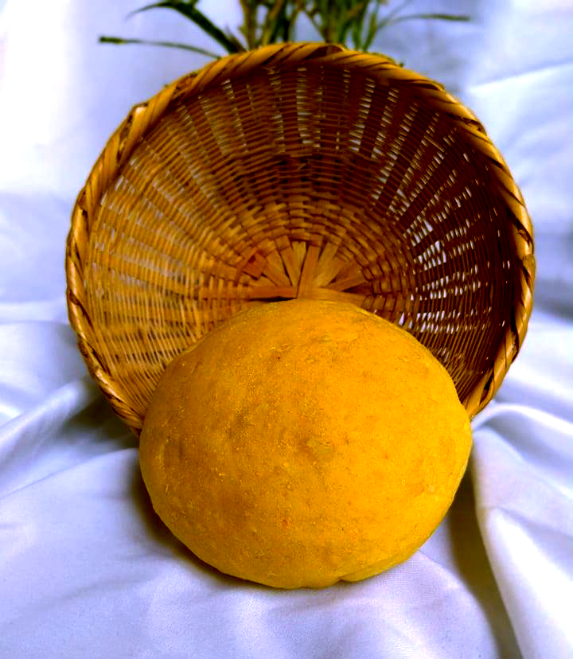Pan preparado ralladura y extracto de zanahoria, con sabor concentrado.
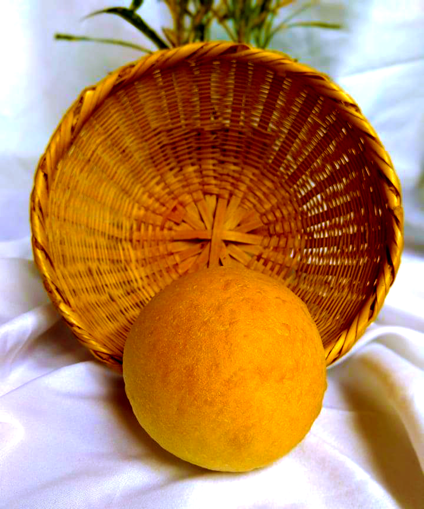Pan aliñado de masa suave, con un porcentaje alto de margarina y huevo.
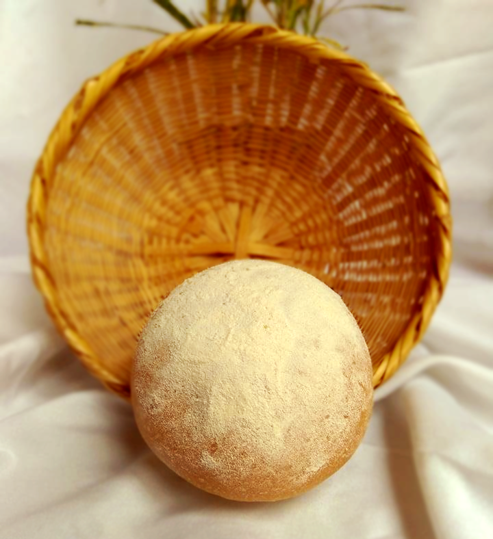Pan de corteza con alto porcentaje de fermento.
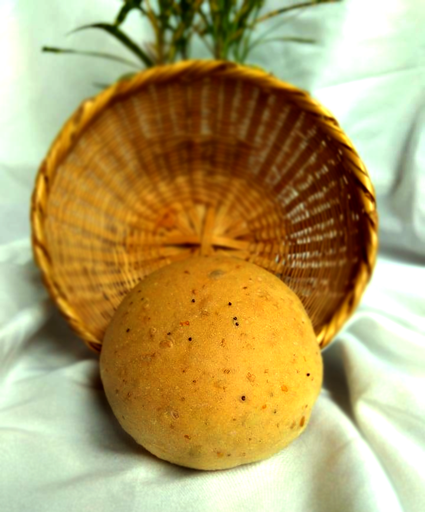Pan que posee semillas de ajonjolí, lino amarillo y marrón, mijo, semillas de girasol y semillas de amapola.
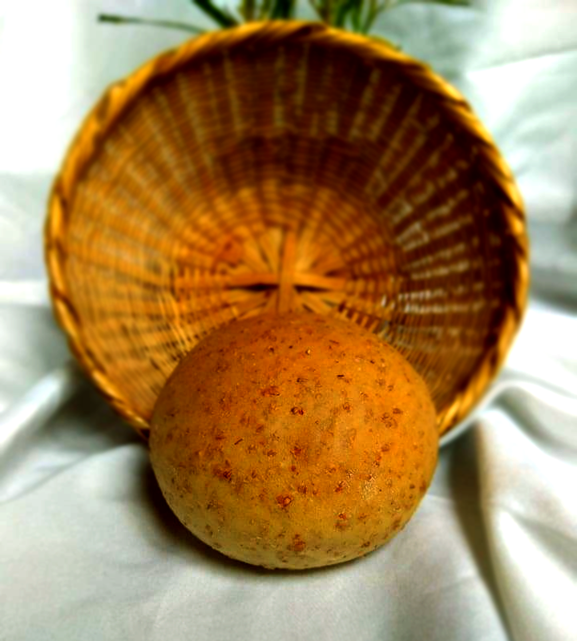Pan de harina 100% integral.
Productos de
pasteleria
Poseemos un amplio portafolio de productos de pastelería y postres para cumplir todas las necesidades de nuestros clientes.
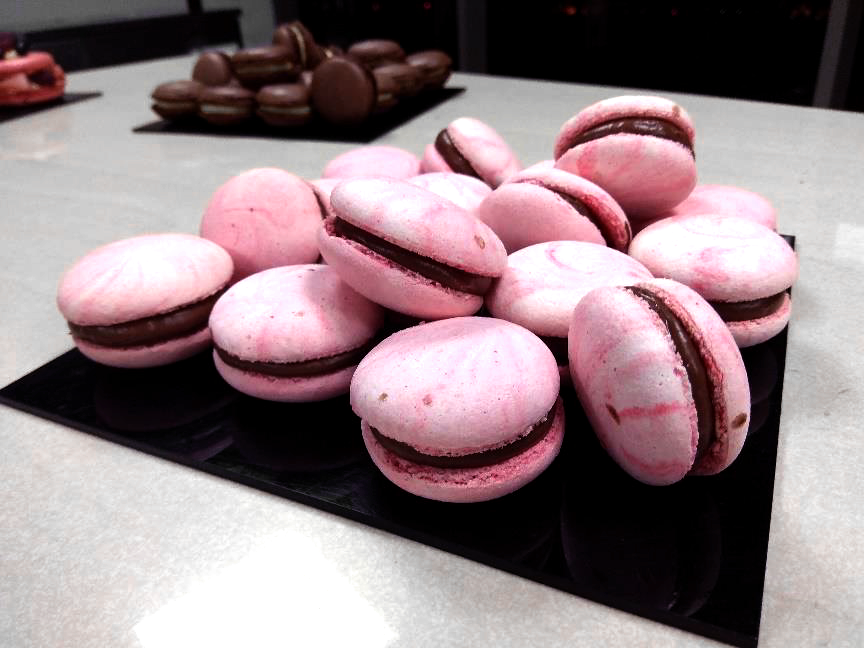 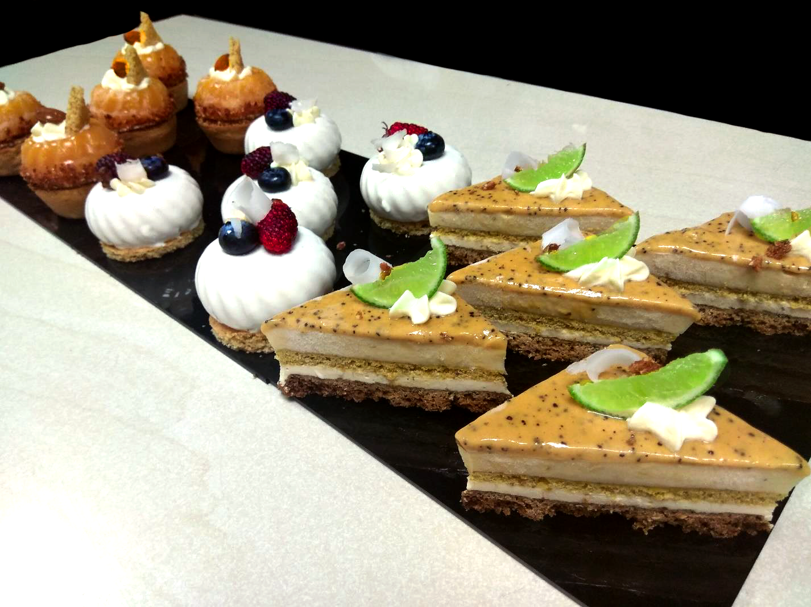 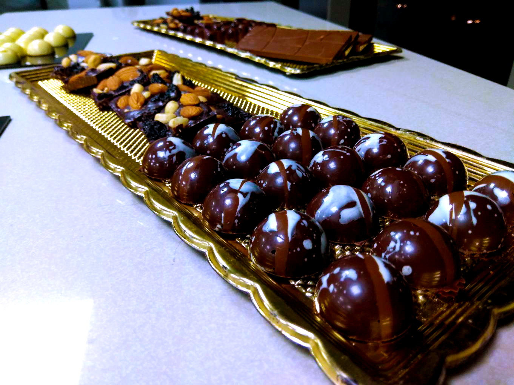 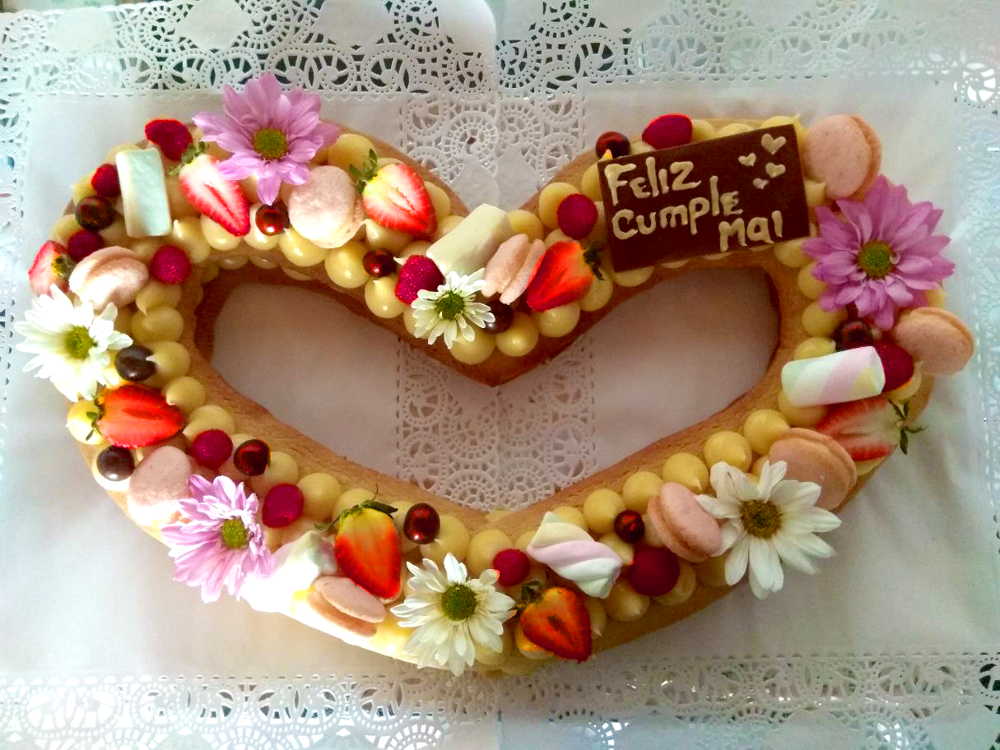Ofrecemos la opción de personalizarlos según sus deseos y necesidades.
Productos para
eventos
También atendemos todo tipo de eventos familiares y empresariales con mesas de dulce y sal de pasabocas. Este servicio se hace personalizado por lo que no manejamos rango de precios.
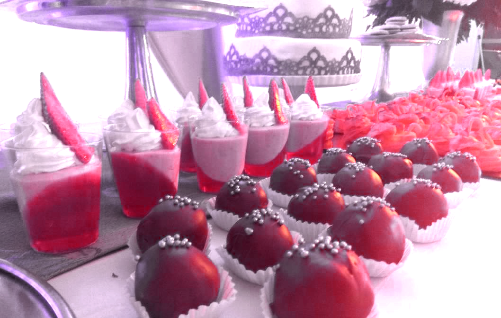 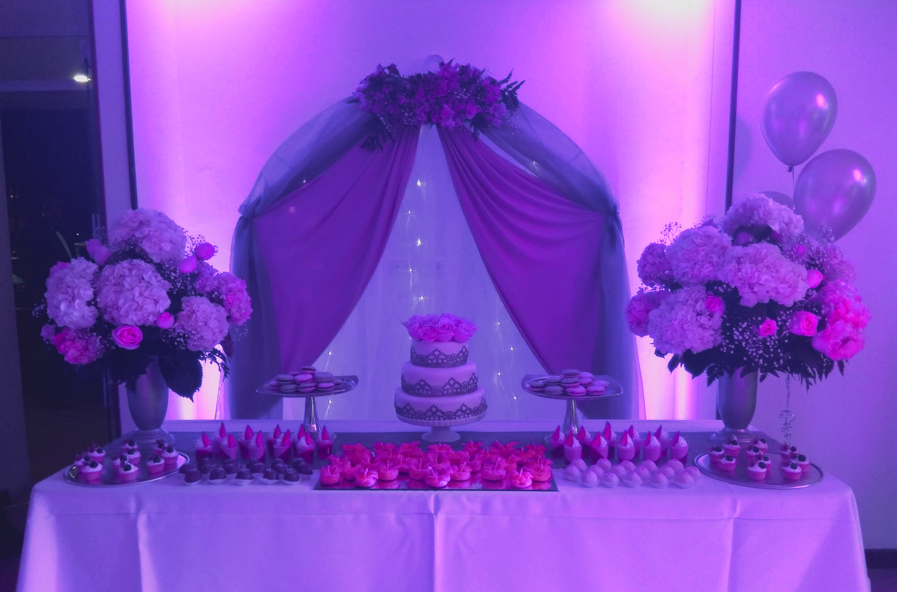 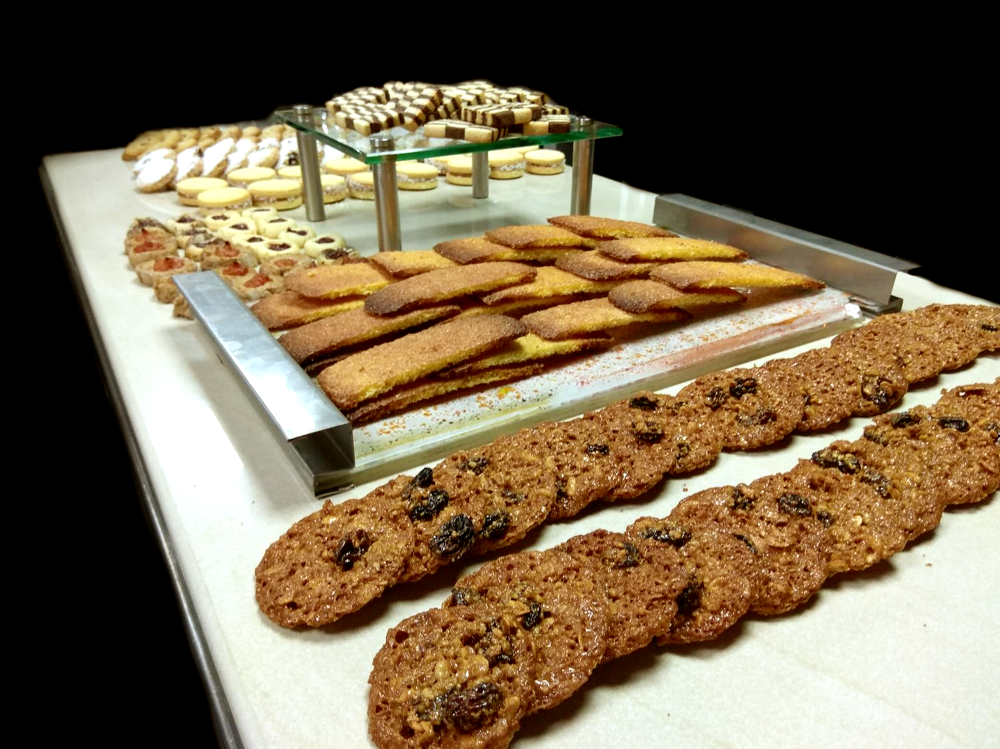 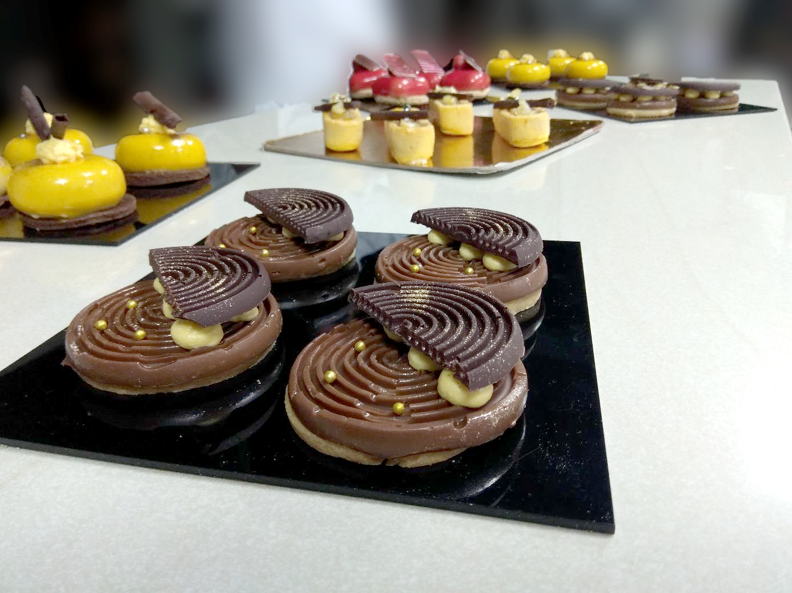